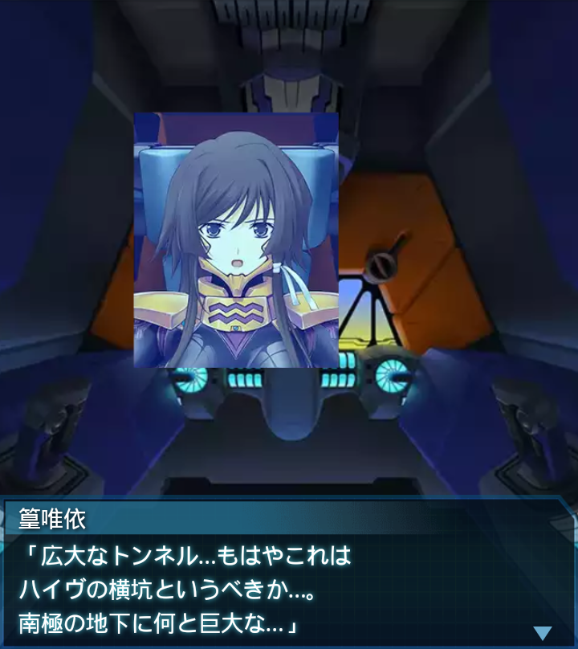
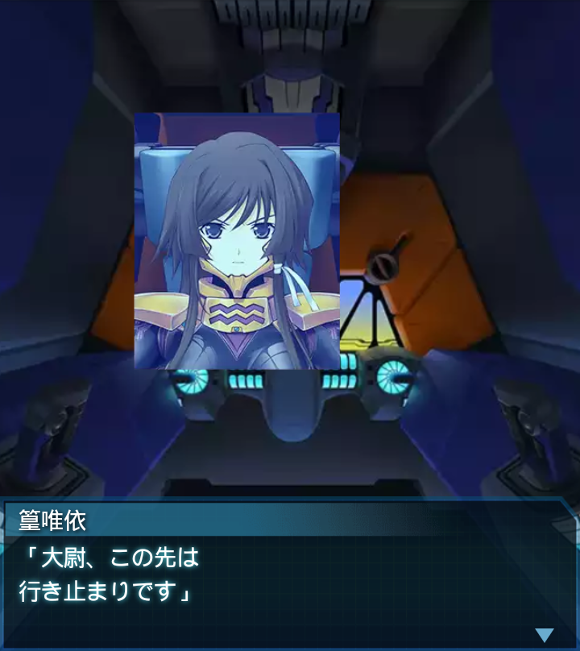

南極・地下氷穴

篁唯依
「広大なトンネル…もはやこれは
ハイヴの横坑というべきか…。
南極の地下に何と巨大な…」
『誰』
「南極大陸は、平均しても
２．５ｋｍの厚さの氷で覆われて
いるからな…」
崔亦菲
「けど、さっきから、突然
行き止まりになったりしてるわね。
エアーハイヴの時と同じだわ」
『誰』
「あれは、世界の融合と関係して
いるようだ。ハイヴ周辺に自然が
数多く残っていたのと同じだ」
崔亦菲
「ハイヴのある世界とない世界が
融合した場合、それは地下にも
影響するって言うんでしょ？」
『誰』
「言われてみれば当然の事だよな。
で、だ。それならここは何なんだ？
ハイヴにしては小さすぎる」
崔亦菲
「生き残っているのはこの道だけ。
確かにおかしいわよね」
篁唯依
「大尉！レーダーに感あり。
この奥にＢＥＴＡがいる模様
です！数は――」
『誰』
「それが施設から逃げ込んだ
ＢＥＴＡなのか、南極の地下が
ハイヴ化しているのか――」
崔亦菲
「こいつ等を倒して先に進めば
解るわよね…。とにかく
ぶっ飛ばしてやるわ！」

篁唯依
「大尉、この先は
行き止まりです」
『誰』
「…マッピングによれば、これで
全ての通路は網羅した筈だ。
本当に小規模だったな」
崔亦菲
「見落としようもないから、これで
終わりって事？ホントにホント？
ここはハイヴじゃない？」

『誰』
「うん、ハイヴどころか、単に
行き止まりの多い横穴だ」
篁唯依
「しかし、この横穴の存在自体が
奇妙だという点は解決できない
ままでしたね…」

『誰』
「…まあいい。全てを香月司令に
報告して分析してもらおう。
俺達は昭和基地に急ぐぞ」
「「了解！」」